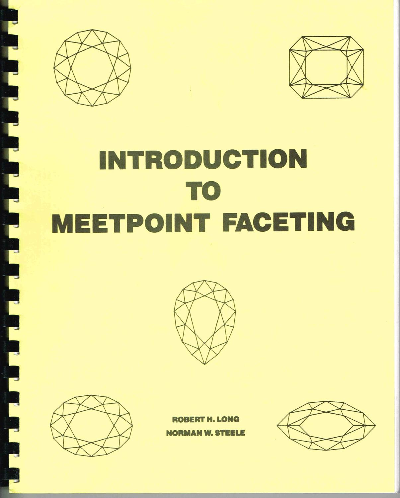

Faceting
Created Mon 06 Jun 2022 02:10:48 PM AKDT
Last Updated: Fri 08 Jul 2022 09:30:11 AM AKDT
Copyright (C) 2022 by Raymond E. Marcil <marcilr@gmail.com>
TODO
-
Crystalite home page
Added June 7, 2022
-
Create an index of my laps.
Added June 7, 2022
-
Track down or make 1/2" solid copper laps.
Added June 7, 2022
-
Track down or make 1/2" tin lap for
polishing with 100,000 or 1/4 micron grit.
Added June 7, 2022
-
Track down or purchase 100,000 or 1/4 micron grit
for polishing.
This is what I used in Australia for polishing sapphires.
Added June 7, 2022
Design
design/
design/index.html
design/brilliant/index.html
Gem grips - gem_grips/index.html
Dops - dops/index.html
Laps - laps/index.html
BOOKS
Long & Steele, Gemcad User's Manual, p. 23
http://www.gemcutter.com/download/gemcad.pdf

“INTRODUCTION TO MEETPOINT FACETING”
by Robert H. Long and Norman W. Steele
$16.95
Remember this boook from Australia.
https://www.rockpeddler.com/product/introduction-to-meetpoint-faceting-by-long-and-steele/
Faceting for Amateurs (3rd Edition)
by Vargas, Glenn; Vargas, Martha D.
Own this book.
Same edition?
Google: long & steele faceting
Filelist
docs
dops.txt
faceting.txt
html
links.txt
manifest
pdf
pics
README
tex
Links
A Simple Method for Transposing Faceting Angles
by Dr. Clive Washington
https://www.gemsociety.org/article/a-simple-method-for-the-transposition-of-faceting-angles/
Copper Lap 150mm Diameter
$95.00 0 Bids or $125.00 Buy It Now 1d 9h 28m 29s, $42.00 Shipping, 30-Day Returns
Seller: fernandoenterprises (64) 100%, Location: Panadura , LK, Ships to: WORLDWIDE, Item: 115406573122
Condition: New, Country/Region of Manufacture: Korea, Republic of
150mm / 25.4 = 5.91"
PicClick Insights - Copper Lap 150mm Diameter
Popularity - 0 watching, 30 days on eBay. 0 sold, 1 available.
Best Price - Avg: $50.63, Low: $11.32, High: $199.99.
Seller - 64+ items sold. 0% negative feedback. Great seller with very good positive feedback and over 50 ratings.
Copper - Wikipedia
https://en.wikipedia.org/wiki/Copper
Great pictures. Looks very nice!
I should buy a few of these!
https://picclick.com/Copper-Lap-150mm-Diameter-115406573122.html
https://www.ebay.com/itm/115406573122?mkevt=1&mkcid=1&mkrid=711-53200-19255-0&campid=5338722076&customid=&toolid=10050
How to Facet Gems
By Dr. Gerald Wykoff GG CSM, International Gem Society
https://www.gemsociety.org/article/how-to-facet-gems/
Solid copper lap (source page)
https://picclick.com/Collectibles/Rocks-Fossils-Minerals/Lapidary-Materials/Tools-Supplies/?q=solid+copper+lap
Has link to (above):
Copper Lap 150mm Diameter
$95.00 0 Bids or $125.00 Buy It Now 1d 9h 28m 29s, $42.00 Shipping, 30-Day Returns
Seller: fernandoenterprises (64) 100%, Location: Panadura , LK, Ships to: WORLDWIDE, Item: 115406573122
Condition: New, Country/Region of Manufacture: Korea, Republic of
150mm / 25.4 = 5.91"
PicClick Insights - Copper Lap 150mm Diameter
Popularity - 0 watching, 30 days on eBay. 0 sold, 1 available.
Best Price - Avg: $50.63, Low: $11.32, High: $199.99.
Seller - 64+ items sold. 0% negative feedback. Great seller with very good positive feedback and over 50 ratings.
Rock Peddler
Lapidary Equipment and Supplies
Has some good looking laps.
https://www.rockpeddler.com/product/8%E2%80%B3-crystalite-solid-steel-lap/
The Standard Round Brilliant and Some Common Variations
Unites States Faceters Guild
Has nice brilliant diagram.
https://usfacetersguild.org/faceting-diagram/the-standard-round-brilliant-and-some-common-variations/
Tin - Wikipedia
Material for faceting laps
https://en.wikipedia.org/wiki/Tin
Zinc lap
Zinc Lap 150mm Diameter
price: $55.00
https://www.ebay.com/itm/115406573843?_trkparms=amclksrc%3DITM%26aid%3D1110006%26algo%3DHOMESPLICE.SIM%26ao%3D1%26asc%3D20200818143230%26meid%3Df97c66de2e1741c0bac61368b6d7191d%26pid%3D101224%26rk%3D3%26rkt%3D5%26sd%3D115406573122%26itm%3D115406573843%26pmt%3D0%26noa%3D1%26pg%3D2047675%26algv%3DDefaultOrganicWeb&_trksid=p2047675.c101224.m-1
The above copper and zinc laps are sold by:
fernandoenterprises.
"Based in Sri Lanka, fernandoenterprises has been an eBay member since May 28, 2007"
https://www.ebay.com/usr/fernandoenterprises?_trksid=p2047675.m3561.l2559
|
{kind=link}